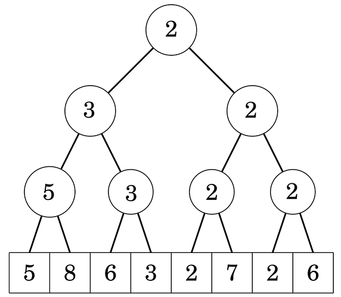
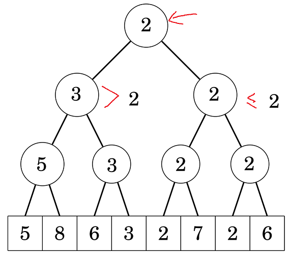
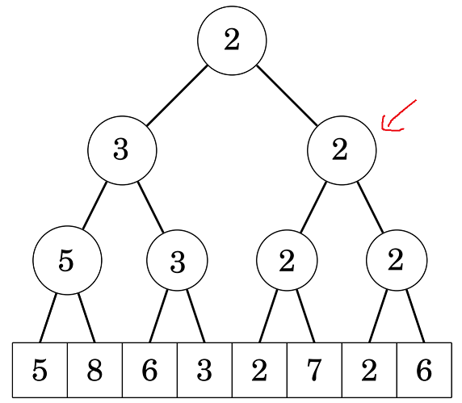
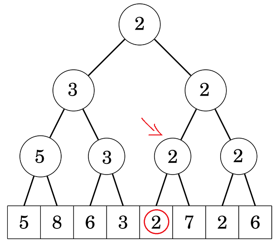

Cho một mảng các số nguyên \(a\) có \(n\) phần tử. Có \(q\) truy vấn có dạng:
Ta nhận thấy do \(a[i] \le k\) và \(i\) nhỏ nhất, cho nên \(a[j] > k\) với mọi \(1 \le j < i\).
Do đó, \(min(a[1], a[2], ..., a[i]) = a[i]\).
Đặt \(f[i] = min(a[1], a[2], ..., a[i])\).
Nhận xét 1: Việc tìm \(i\) nhỏ nhất sao cho \(a[i] \le k\) cũng tương ứng với việc tìm \(i\) nhỏ nhất sao cho \(f[i] \le k\).
Nhận xét 2: \(f[i - 1] \ge f[i]\). Nói cách khác, \(f\) là mảng không tăng.
Vậy bài toán có thể phát biểu lại như sau:
Cho một mảng các số nguyên \(f\) đã “sắp xếp” giảm dần, có \(q\) truy vấn có dạng:
Rõ ràng bài toán này chỉ là bài toán chặt nhị phân cơ bản, vì mảng \(f\) đã được “sắp xếp”. Tới đây ta có thể trả lời các truy vấn trong độ phức tạp \(O(logn)\). Code thì nó sẽ giống giống thế này:
int query(int k) {
int l = 1, r = n, pos = -1;
while (l <= r) {
int mid = (l + r) / 2;
if (f[mid] <= k)
pos = mid, r = mid - 1;
else
l = mid + 1;
}
return pos;
}
Cho một mảng các số nguyên \(a\) có \(n\) phần tử. Có \(q\) truy vấn có dạng:
Bài toán này giống bài toán 1, nhưng có thêm truy vấn cập nhật phần tử, điều này làm cho mảng \(f\) bị thay đổi. Ta có thể sửa lại yêu cầu bài toán một chút, là có 3 loại truy vấn:
Rõ ràng truy vấn 1 và 3 có thể thực hiện bằng segment tree với độ phức tạp \(O(logn)\), vậy thì tới đây bài toán quay về bài toán 1, chỉ có điều khi ta cần tính \(f[i]\) thì ta phải gọi hàm trên segment tree để lấy min, độ phức tạp cho việc trả lời truy vấn 2 là \(O(log^2n)\):
int query(int k) {
int l = 1, r = n, pos = -1;
while (l <= r) {
int mid = (l + r) / 2;
if (getMin(1, mid) <= k)
pos = mid, r = mid - 1;
else
l = mid + 1;
}
return pos;
}
Nhưng nếu chỉ dừng ở đây thì đã không cần blog này rồi <(“). Ta nhìn một chút vào cấu trúc cây segment tree (quản lý min) dưới dây:
.
Giả sử ta cần tìm vị trí đầu tiên có giá trị không vượt quá \(2\). Ta đứng từ gốc, xét 2 con trái phải lần lượt có giá trị là 3 và 2: 
Do ta đang cần tìm giá trị không vượt quá 2, nên ta chắc chắn kết quả không nằm trong cây con bên trái (vì min của cây con này là 3, suy ra mọi phần tử được quản lý bởi cây con này đều lớn hơn 2). Và do cây con phải có giá trị là 2, suy ra kết quả chắc chắn nằm cây con này, ta đệ quy xuống cây con bên trái:

Tương tự, cây con này có 2 cây con trái và phải, cả 2 đều có giá trị là 2, nghĩa là luôn tồn tại ít nhất một số có giá trị bằng 2 trong cả 2 cây con này, từ đó suy ra cả 2 cây con đều có thể chứa kết quả ta cần tìm. Nhưng do ta muốn tìm vị trí có \(i\) bé nhất, nên ta sẽ ưu tiên đi vào cây con bên trái (cây con này quản lý các vị trí nhỏ hơn các vị trí của cây con phải).

Lập luận tương tự thì ta sẽ biết được kết quả nằm ở cây con trái, lúc này cây chỉ quản lý duy nhất một phần tử nên ta có thể kết luận luôn vị trí cần tìm.
Đoạn code mẫu cho việc tìm vị trí đầu tiên không vượt quá số \(k\) có thể code như sau, lưu ý, trong code này mình xem mảng \(st\) là mảng lưu giá trị của segment tree, 3 tham số \(root, l, r\) thể hiện cho việc nút \(root\) quản lý một đoạn từ \([l, r]\):
int query(int root, int l, int r, int k) {
if (st[root] > k) return -1; //nếu cả đoạn [l, r] đều lớn hơn k thì không thỏa mãn
if (l == r) return l; //khi đoạn có 1 phần tử thì đó là kết quả
int mid = (l + r) / 2;
if (st[root * 2] <= k) //nếu min cây con trái không vượt quá k
return query(root * 2, l, mid, k);
//ngược lại thì kết quả nằm ở bên cây con phải
return query(root * 2 + 1, mid + 1, r, k)
}
//cout << query(1, 1, n, k);
Hàm trên có độ phức tạp là \(O(logn)\), bởi vì mỗi lần đệ quy chỉ gọi ra một hàm khác (từ một nút chỉ đi qua một nút khác), và số lần gọi đệ quy chính bằng độ cao của segment tree. Tới đây ta đã xong bài toán 2.
Lưu ý là, với các bài toán mà truy vấn cập nhật là một đoạn (thay vì một phần tử như bài toán 2), thì việc cài đặt hàm \(query\) ở trên vẫn không đổi, chỉ có thêm vào lazy trước khi xét 2 cây con trái phải, mình xin giành cho bạn đọc vậy.
Cho một mảng các số nguyên \(a\) có \(n\) phần tử. Có \(q\) truy vấn có dạng:
Bài toán này khó hơn bài toán 2 một chút, đó là có thêm một cận dưới của $i$ (thay vì tìm \(i\) bé nhất, thì ta cần tìm \(i\) bé nhất nhưng lớn hơn một số nào đó), ta có thể thay đổi code một tí như sau:
int query(int root, int l, int r, int lowerbound, int k) {
if (st[root] > k) return -1; //nếu cả đoạn [l, r] đều lớn hơn k thì không thỏa mãn
if (r < lowerbound) return -1; //ta chỉ xét những vị trí không nhỏ hơn lowerbound
if (l == r) return l; //khi đoạn có 1 phần tử thì đó là kết quả
int mid = (l + r) / 2;
int res = -1;
if (st[root * 2] <= k) //nếu min cây con trái không vượt quá k
res = query(root * 2, l, mid, lowerbound, k);
//nếu cây con trái không tìm được kết quả <=> min nằm ngoài lowerbound
//thì ta sẽ tìm kết quả ở cây con phải
if (res == -1)
res = query(root * 2, mid + 1, r, lowerbound, k);
return res;
}
//cout << query(1, 1, n, l, k);
Code này có một chút lạ, khác so với code ở bài toán 2 một chút, ở bài toán 2, thì mỗi lần đệ quy chỉ thăm duy nhất một con trái hoặc phải, nhưng ở code mới này thì một lần đệ quy có thể phải thăm cả 2 con, lý do là vì có thể một cây con nó có min không vượt quá \(k\), nhưng vị trí đạt min nó có thể nhỏ hơn lowerbound, vì thế ta phải tìm ở cây con khác.
Để đánh giá độ phức tạp code trên thì hơi rườm rà một chút, nhưng nó vẫn là \(O(logn)\). Đại ý là ta có thể chứng minh số lần mà \(r < lowerbound\) sẽ không quá \(O(logn)\).